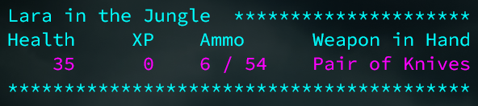
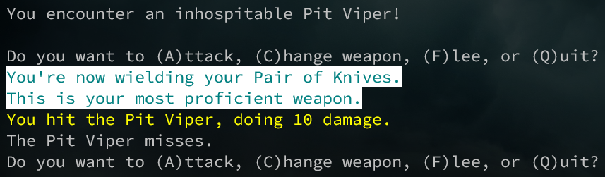

Your goal is to traverse the jungles of South America, in search of the lost city of the dead — the ancient Necropolis of a little known branch of the Inca. Rumor has it that some of these tribesman still exist today, and jealously guard their secrets with beastly adroitness.
You must take on the role of one of the greatest adventurers of all time and, using the skills you've honed from years of tracking and hunting, and numerous movie and video game appearances, locate the Necropolis and extract the golden head of Ocxaloc, king of the Inca, from the throne room where it is enshrined. But beware your rival archaeologist; he, too, is on the trail of the golden statue. You must defeat him to return alive.
Choose from the world's four greatest adventurers. Each persona has its own weapons and skills that make for unique gameplay in yor quest for the idol.
Use the heads-up display to keep track of your character's health, weapons, ammunition, and location. With this information, you'll always be ready to make the best decision for any situation.
Select the best weapon for your skills. Each persona has weapons that they are particularly adept with. Indy's awesome with a whip, Lara is deadly with her knives, Allan is an expert marksman, and Harry has a boomstick. It's pretty effective.
Check out the [Git repository] for more information, and have a go at your own